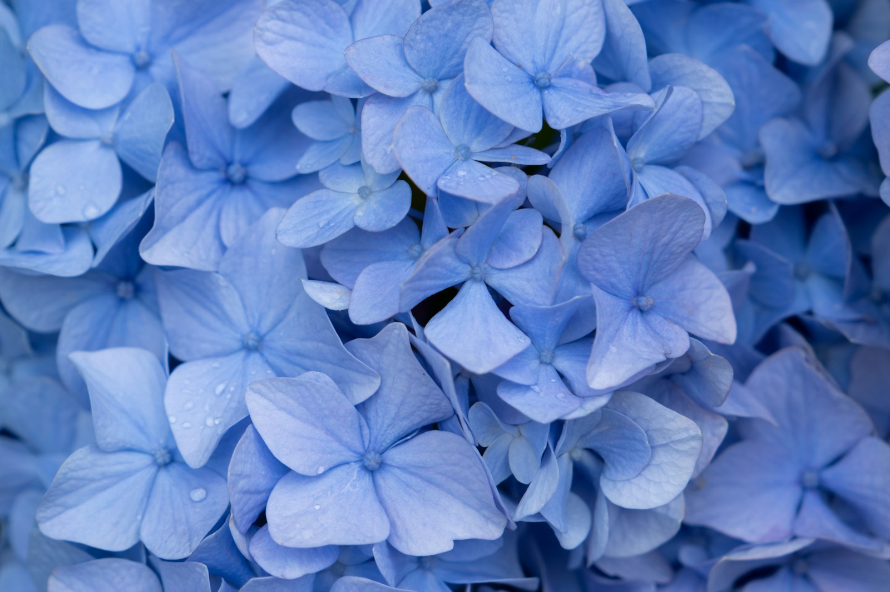

THE NAME CORRECTION / 10 JUNE
I'm Anike not Ayinke
I know 😂
For the record, I know. This entire website is evidence, ma. 😹
11 OCTOBER · A LOVE NOTE FROM YOUR SHAZILY
For my favourite girl
Shukroh Olaiya Anike.
كُلُّ عَامٍ وَأَنْتِ بِخَيْرٍ، يَا حَبِيبَتِي
Every year, may you be well, my love. ♡
You said, “I want the world.”
Oya. Let’s start with this little world of ours. 🤭
Your smile. Our gist. All the small small wahala.
Allahuma Baarik. See teeth. 🥹
A LITTLE ARABIC. PLENTY LOVE.
Anike, even my birthday wishes have dressed up for you. Read slowly, ma. This one comes with love. 🤭❤️
A BIRTHDAY WISH FOR MY ANIKE
كُلُّ عَامٍ وَأَنْتِ بِخَيْرٍ، يَا حَبِيبَتِي. أَسْأَلُ اللَّهَ أَنْ يُبَارِكَ فِي عُمْرِكِ وَيَمْلَأَ قَلْبَكِ فَرَحًا وَسَكِينَةً.
Every year, may you be well, my love. I ask Allah to bless your life and fill your heart with joy and tranquillity.
A personal birthday wish, from your Shazily.
وَالسَّلَامُ عَلَيَّ يَوْمَ وُلِدْتُ وَيَوْمَ أَمُوتُ وَيَوْمَ أُبْعَثُ حَيًّا
“And peace is on me the day I was born and the day I will die and the day I am raised alive.”
The words of Prophet Isa in the Qur’an, Surah Maryam 19:33.
Anike, as we celebrate your life, my own prayer is that Allah surrounds you with peace, protects you, and grants you goodness in this life and the next. Ameen. 🤲🏾
THIS ONE IS NOT A BIRTHDAY BROADCAST
I was going to write “a queen was born.” You said I should trash it. Her Majesty, I have heard you. 😹
You reminded me that November makes a year since we started talking properly. Look at how many little memories we have already made. ❤️
So I kept the things that are ours. The places. The expressions. The conversations I want to read again. And the prayers I still mean.
01 / THE BLUE CHAPTER
One photoshoot, plenty evidence.
Tap a photograph. I have something to say. 🌚
“You are beautiful” “Allahuma Baarik”
ME, 7 MAY. STILL ME, EVERY TIME I SEE YOU.HER MAJESTY / MORE EVIDENCE
The poses. The expressions. Even when you turn away.
Tap a photo, Anike. Your boy has commentary. 🤭
A LITTLE MOVING EVIDENCE
Omo, a photograph was not enough for this one. Her Majesty brought a whole fashion show. 😹❤️
Press play. Take your time with this one.
Exhibit A: my babe feeling herself. 🤭
02 / ALL THE VERSIONS OF YOU
The little girl in these pictures deserves to see
how much there is to celebrate about her now.
NURSE OLAIYA, PLEASE STAND UP
“Anatomyyyy🤭. It was sweeet🥺” was your review on 22 June. I love that there are days when learning makes you light up like that. And on the harder days, the tests, clinicals, and tired evenings, I still see the work you are putting into becoming who you want to be. Nurse Olaiya, I am rooting for all of it.
“I’m just commending the woman you already are”ME, 27 MAY 2026
May Allah put barakah in your knowledge and your hands. May you bring ease to the people you care for, and may you always have people who care for you too. Ameen. 🤲🏾
You go do family nurse for Sanni family. I said what I said. 😌❤️
03 / OUR LITTLE MAP
Choose a place. Let’s go back for a minute.
MARYLAND MALL / US, IN THE MIRROR
Look at us. Your smile, that dress, and me making sure the shoes entered the frame. Priorities, please. 😹
Cinema?
Maryland mall
Let’s go together
Okay that's cool
That last part. Let’s go together. More of that, bi’idhnillah. ❤️
OZONE CINEMA / THE THUMBS-UP COMMITTEE
Anike, two thumbs up? Is that my review? Because I am keeping this evidence. 🌚😹
I'll be at Ozone by 4 though.
Just letting you know incase you can't reach me
The wine shirt. Your black hijab. All these smiles. We gave the camera plenty work that day. Tap the little photos. Every expression deserves its own commentary.
UNILAG / THE FAMILIAR CHAPTER
Our Unilag meetups. The familiar place that keeps coming up in our gist. Even my Android did not escape your commentary. 😹
The day we all went to Unilag
Ehn ehn?🤧😹
Some places stop being just a location. They become a reminder of a person. Unilag has you in it for me.
04 / OUR OWN LANGUAGE
Some conversations only make sense
when it’s the two of us.
THE NAME CORRECTION / 10 JUNE
I'm Anike not Ayinke
I know 😂
For the record, I know. This entire website is evidence, ma. 😹
CHOCOLATE IS NOT A DEBATE / 11 JUNE
I want chocolate
Yes or yes?🌚
A negotiation with only one correct answer.
BIG DREAMS, BUT SLEEP FIRST / 17 AUGUST
I would take you all over the world
And we would continue the love story in Jannah too🥹
Okay sir but tonight I need to go to dream land first😹😹
Even my romance has to respect your bedtime. 😭❤️
HOW SHALL I ADDRESS YOU TODAY?
Anike. Not Ayinke. I have learnt my lesson. 😹❤️
Small cameo from your Shazily.
Before you say this website is only about your face card, I have submitted my own passport photograph. Rate gently, please. I am somebody’s future husband, bi’idhnillah. 😌🤭
But the smile in our Maryland picture? That is the real review. I look happiest beside you.
SOME MESSAGES DESERVE A SECOND READ
Choose a memory. Tap to let our words find you again.
8 OCTOBER 2026
You already planned the next chapters.
On 20 August, you laid it out for me. I have kept the plan, ma.
OCTOBER
“October - My birthday”
Her Majesty gets her little world. Blue, prayers, memories, and your fine boy doing his best to make you blush.
NOVEMBER
“November - makes it officially a year since we started talking properly”
Not a date I picked out of thin air. Your words. Another reason to say Alhamdulillah for finding you.
DECEMBER
“December - your birthday”
I will try to behave until then. No promises. You know your Shazily already. 😹❤️
UNDERNEATH ALL THE TEASING
On 27 May, I told you I love you. You said it made you feel so loved and so emotional.
“I love you Shukroh”
“I love you Ejeh mi😚”27 MAY 2026
I wanted you to find those words here again. Not buried under stickers and everyday gist. Right here, with your face beside them.
“Omooooooo this is making me feel soo loved and soo emotional”
“Thank you for your kind words 🤭🥺”
Psst. These are just for you.
Three tiny letters. Pick the one your heart needs today.
Nurse Olaiya, breathe small. You do not have to be strong every minute to be doing something brave. May Allah ease your postings, give you kind teachers, and turn what feels confusing into understanding. You once told me, “Anatomyyyy🤭. It was sweeet🥺”. May there be more days like that, and help for the days that are not. I see your effort, Anike. I am proud of you before the result arrives. 🤲🏾❤️
Oya, imagine me saying “Let’s go together.” Maryland, Ozone, or just another ordinary day with you. I miss the smiles that happen when we are in the same frame. Until the next outing, keep this little piece of me. And behave, ma. I am trying too. 🤭❤️
On 27 May, I said, “I would be patient 😚”. You replied, “I would so much love that”. I still mean it. I pray one day “Mrs Sanni” is more than my favourite way to disturb you. A home with peace. Two people who keep choosing kindness. You coming back from work to someone who wants to hear how your day went. May Allah make that future good for us and ease the path to it. Ameen. The Maldives trip can follow, obviously. 😌❤️
05 / THIS PART, I MEAN WITH MY WHOLE HEART
Anike, I will tease you again after this.
But first, let me pray for my babe. 🤲🏾
رَبَّنَا آتِنَا فِي الدُّنْيَا حَسَنَةً وَفِي الْآخِرَةِ حَسَنَةً وَقِنَا عَذَابَ النَّارِ
“Our Lord, give us good in this world and good in the Hereafter, and protect us from the punishment of the Fire.”
Goodness here. Goodness in the next life. That is what I pray for you, Anike.
THREE LITTLE PRAYERS TO CARRY WITH YOU
For a busy day, a brave day, or a day when you just need softness.
اللَّهُمَّ ارْزُقْهَا سَكِينَةَ الْقَلْبِ
O Allah, grant her tranquillity of heart.
May your heart find rest, ẹwà mi. Even Her Majesty deserves to put the crown down sometimes. ❤️
May Allah fill your heart with sakinah. May He ease what feels heavy, give you beautiful reasons to smile, and surround you with love that brings you peace. May your joy be sincere, lasting, and full of barakah. Ameen.
May Allah ease every lecture, every exam, and every clinical posting for you, Nurse Olaiya. On the days you are tired and still show up, may He strengthen you. May none of your effort go in vain. May you graduate with flying colours and the first class you are working towards. May He bless your knowledge, steady your hands, and help you through life as a nurse. I want to see you hold that result and smile like all the late nights finally make sense. Ameen, ẹwà mi. 🤲🏾❤️
May Allah grant you good health, protect you from harm, and open doors of khayr for you. May He place barakah in your time, your rizq, your dreams, and every good thing you are working towards. May what is meant for you reach you in the best way. Ameen.
May Allah guide us towards what pleases Him. May He give us patience, honesty, kindness, and understanding. May He make us good for one another and bless our journey from dating to husband and wife in a way that pleases Him. I want more than another outing, Anike. I want the ordinary days, the home, the laughter, and the life we build together. May we choose each other with kindness, and may He grant us goodness here and in Jannah. Ameen, future Mrs Sanni, bi’idhnillah. 🤲🏾❤️
On 17 May, you asked, “Our money for Maldives is almost complete right?🤭😹😹😹” Anike, the agenda has been on record since. May Allah bless your rizq so much that taking your fine boy to the Maldives becomes a small thing. Yes, you read that correctly. You, me, blue water, and no clinical posting calling you back. 😹❤️ But underneath the teasing, I pray you have enough to live gently, care for the people you love, and enjoy the beautiful things you work so hard for. Ameen.
“May Allah bless you for me, put so much Barakah in what you are doing and continue to make you our source of pride”A PRAYER I SENT YOU ON 27 MAY. STILL MY PRAYER FOR YOU.
11 OCTOBER / ALL YOURS
My fine babe. Nurse Olaiya. Her Majesty.
Anike, you are loved. Allahuma Baarik. ❤️
